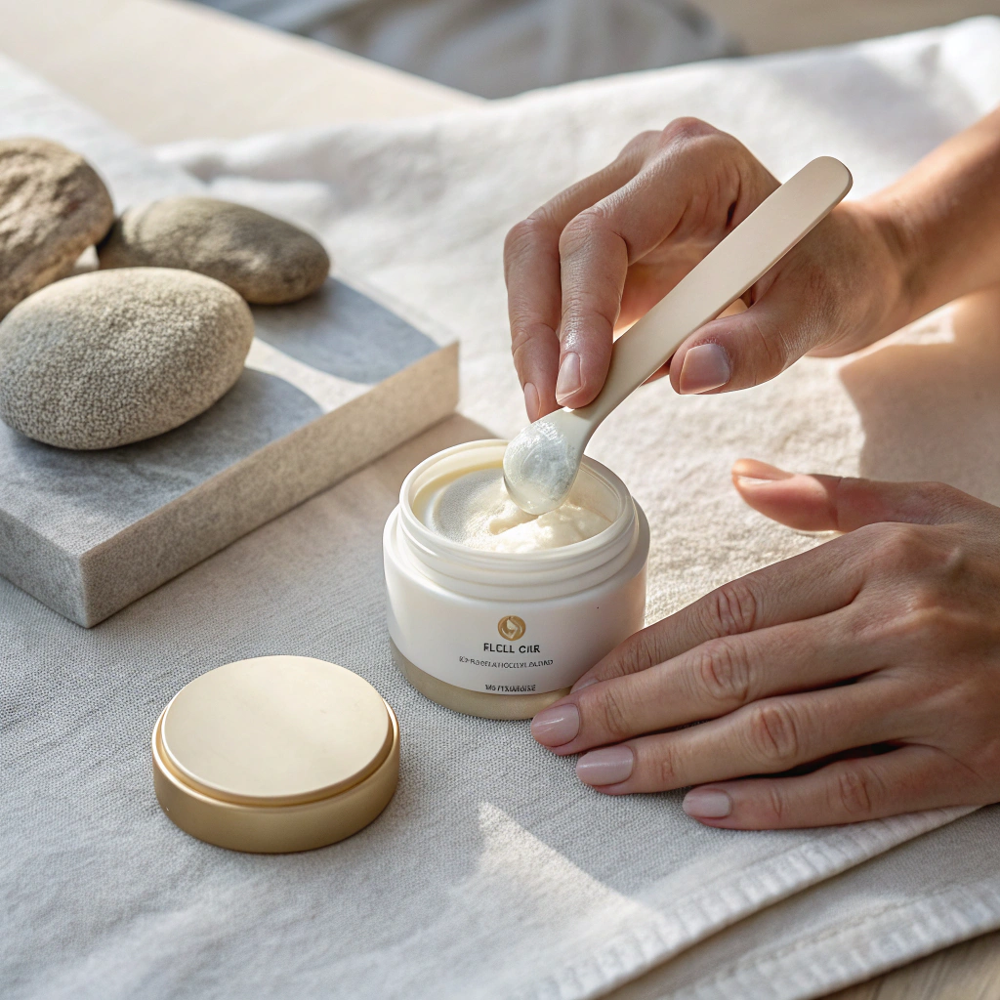
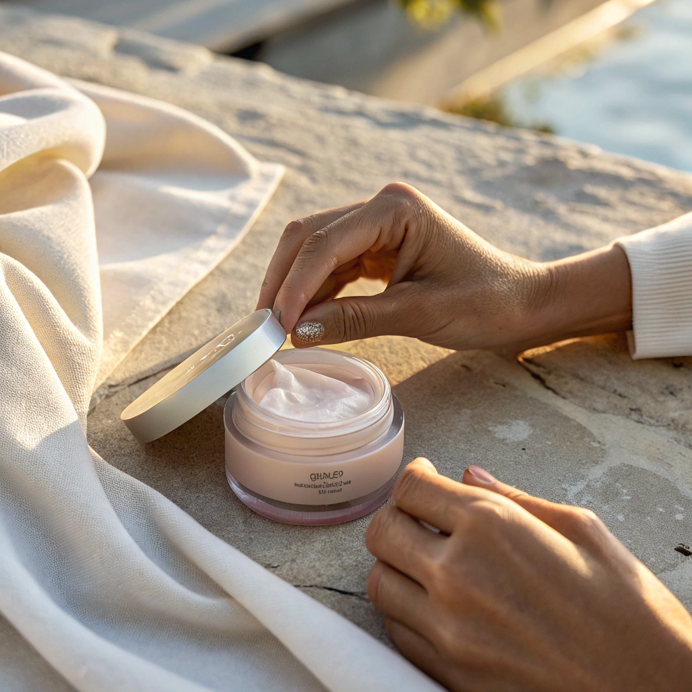
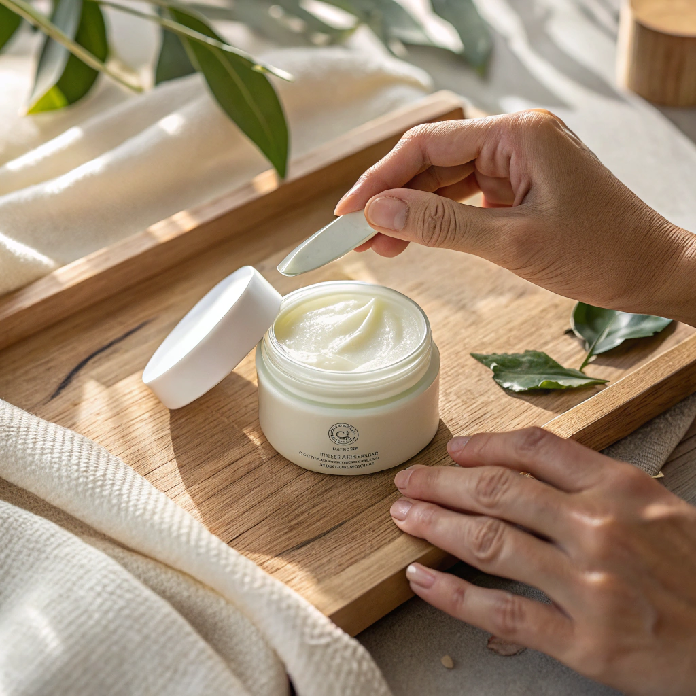
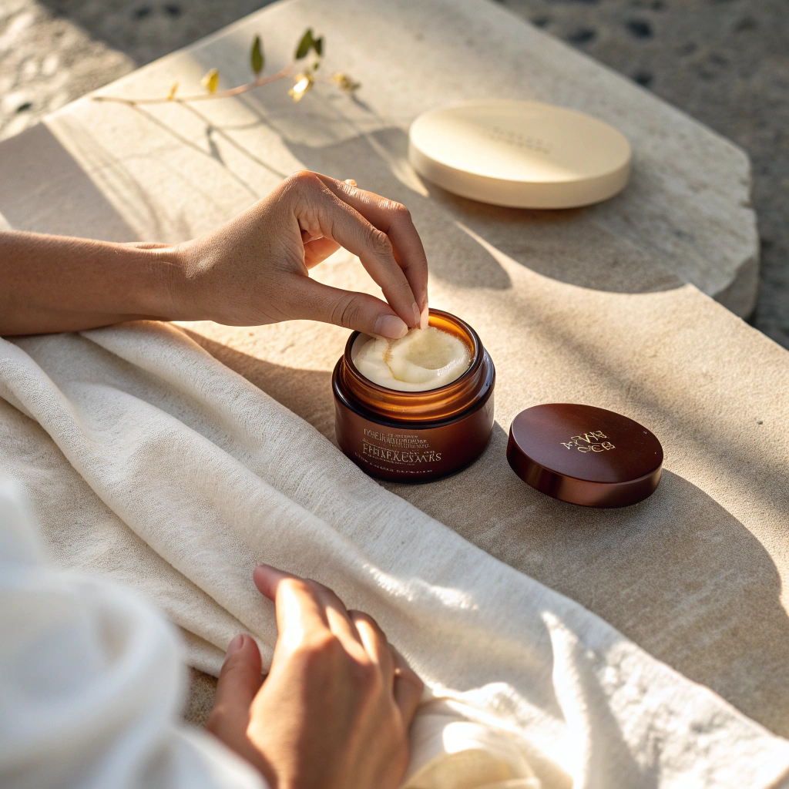
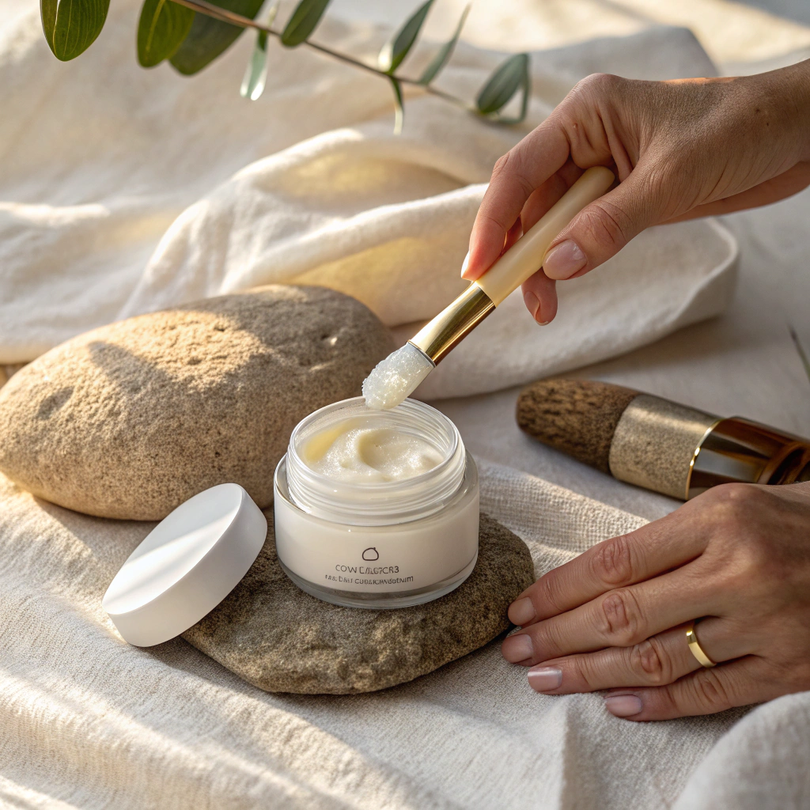

Besleme Önerileri
Yumuşaklık, doyum, içten bakım...
Cilt tipine göre değişen nemlendirme ve besleme ihtiyaçları için hazırlanmış, cildin bariyerini güçlendiren ve uzun süreli konfor sağlayan öneriler.
Kendine gösterdiğin özen, cildine de geçer.
Kuru Cilt
 DokunBesleme Önerileri
-
Derin Nem
Seramid, yağ asidi ve yoğun krem içerikleriyle cildini uzun süre besle. -
Kapatma Anı
Bakımı nemliyken yap. Nem, nemle kilitlenir. -
Geceyi Kullan
En yoğun beslemeyi geceye bırak. Cilt uyurken onarır. -
Niyet
“Cildimin doyuma ihtiyacı olduğunu kabul ediyorum.”
Yağlı Cilt
 DokunBesleme Ritüeli
-
Hafif Ama Etkili
Jel-krem ve su bazlı nemlendiricilerle cildi yormadan besle. -
Dengeyi Bozma
Nem vermemek yağlanmayı artırır. Besleme, denge sağlar. -
Katmanlama
Serum + hafif krem yeterlidir. -
Niyet
“Cildimi bastırmadan beslemeyi seçiyorum.”
Hassas Cilt
 DokunBesleme Ritüeli
-
Sakin İçerikler
Papatya, yulaf, panthenol gibi yatıştırıcı bileşenleri tercih et. -
Az Ama Sürekli
Fazla ürün değil, düzenli bakım. -
Dokunma Biçimi
Bastırma, sürme. Cilde bırak. -
Niyet
“Nazik olmak, ihtiyaçlarımı görmektir.”
Karma Cilt
 DokunBesleme Ritüeli
-
Bölgesel Besleme
Yanaklara daha yoğun, T bölgesine daha hafif dokunuşlar. -
Uyumlan
Her gün aynı histe olmayabilirsin. Cildin de değil. -
Esnek Rutin
Tek ürün her bölge için şart değil. -
Niyet
“Cildimin değişimine alan açıyorum.”
Normal Cilt
 DokunBesleme Ritüeli
-
Süreklilik
Nemlendirme alışkanlıktır. Atlamadan devam et. -
Doygunluk Kontrolü
Fazla ürün cildi yorar. Yeteri kadar besle. -
Mevsime Göre
Kışın daha yoğun, yazın daha hafif içerikler seç. -
Niyet
“Cildimin iyi halini sürdürmeyi seçiyorum.”